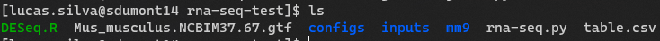

Passo a passo para executar o ParslRNA-Seq
Para usuários do SDumont
1. Antes de qualquer coisa, certifique-se de ter os arquivos necessários para execução todos no diretório de trabalho de execução. São eles:
1. Arquivo GTF;
2. Base genômica (mm9);
3. Script do DESeq;
4. Arquivos fastq.gz no diretório inputs/.
5. Tabela CSV.

2. Agora carregue o módulo do python:
$ module load python/3.8.2
3. Verifique o arquivo de configuração confightex.py no diretório configs/.
Verifique a quantidade de nós (nodes_per_block), o tempo máximo do job (walltime) e a fila de execução (partition).
4. Verifique a tabela CSV.
5. Por fim, execute o workflow rodando o seguinte comando:
$ nohup python3 path/to/rna-seq.py path/to/mm9/mm9 24 path/to/inputs/ path/to/outputs path/to/Mus_musculus.NCBIM37.67.gtf path/to/DESeq.R &
É possível criar um bash script para facilitar a executção do python RNA-Seq. O Script está disponível no GitHub.
Lembre-se de executar o comando de permissão de execução para o script bash:
$ chmod 777 execution.sh
Depois é só executar o seguinte comando:
$ ./execution.sh